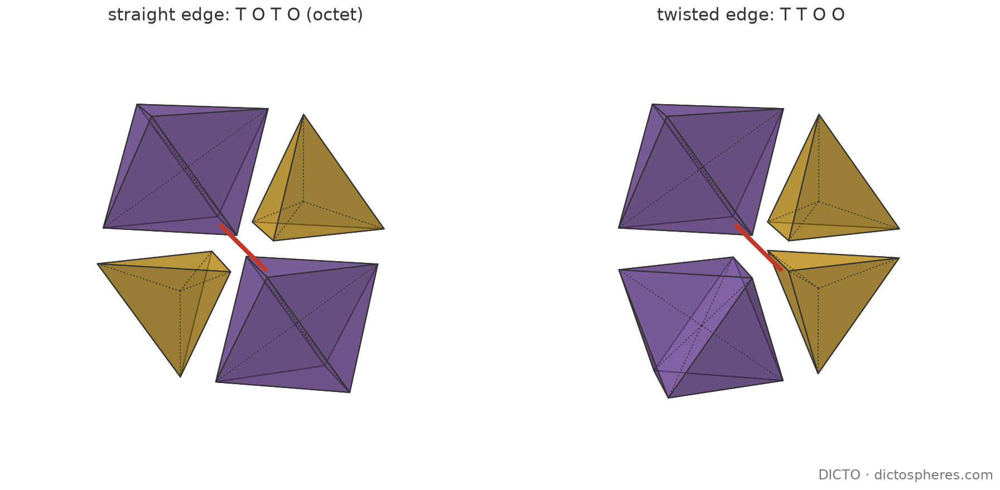
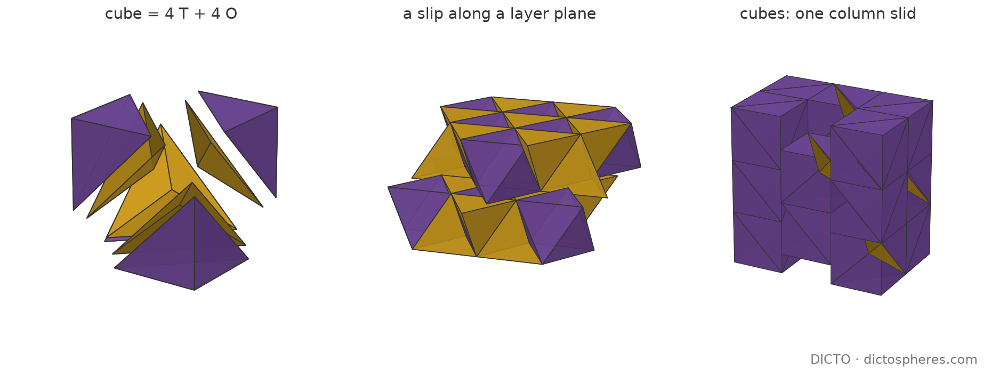

Theorem: the face-to-face tilings of space by the tetrahedron's and the octahedron's centre pyramids are exactly the close-packed stackings of layers, one straight-or-twisted choice per layer; without the face-to-face rule no finite list of parameters describes them
Cut every tetrahedron and octahedron of Fuller's octet truss [13] from its centre into pyramids, one on each face. Paper #44 showed that these two pyramids together fill space and that no other pair of Platonic face pyramids does, and #77 that when pieces meet whole face to whole face the pyramids always reassemble into tetrahedra and octahedra. Here we find all the ways they can then do it: the tetrahedra and octahedra always lie in flat layers, like oranges stacked in a crate. Each layer can sit on the one below in one of two ways, so the tilings are exactly the ways of stacking close-packed spheres. If faces may meet only in part, the pieces can also form cubes, and then there are far too many tilings for any list.

The two pyramids. With base edge 1, the T pyramid has lateral edges √6/4 ≈ 0.612 and the O pyramid √2/2 ≈ 0.707. Their faces are of three shapes, no two congruent: the equilateral base (1, 1, 1), the T lateral face (1, 0.612, 0.612) and the O lateral face (1, 0.707, 0.707), which has a right angle at the apex. With α = arccos(1/3) ≈ 70.53° the tetrahedron's dihedral angle and π − α the octahedron's, the dihedral angles are (#44, Table 1):
| Pyramid | Base edges (length 1) | Lateral edges | Volume |
|---|---|---|---|
| T (tetrahedron's) | 3, dihedral α/2 ≈ 35.26° | 3 of length √6/4, dihedral 120° | √2/48 |
| O (octahedron's) | 3, dihedral (π − α)/2 ≈ 54.74° | 3 of length √2/2, dihedral 90° | √2/24 |
Tilings. A tiling by T and O is a covering of space by congruent copies of T and O (mirror images allowed; both pyramids are mirror-symmetric, so this changes nothing) with disjoint interiors, finitely many meeting any bounded set. It is face to face if any two tiles meet in a common face of both (a whole facet, a whole edge, a common corner) or not at all [20]. A Barlow stacking is a sequence (sk), k ∈ ℤ, of letters A, B, C with sk+1 ≠ sk: the planes z = k√6/3 carry triangular lattices of edge 1 in the three positions A, B, C over one another, as in close-packed spheres of diameter 1 [1, 16]. A layer k is straight (c) if sk−1 ≠ sk+1 and twisted (h) if sk−1 = sk+1: the c/h words (Jagodzinski's notation [18]; Verma and Krishna [19]) of #40, which builds the octet layers on every such word, and of #57 [8, 9]. The octet is ABCABC…, every layer straight (fcc); ABAB… has every layer twisted (hcp).
If pieces meet whole face to whole face, the two pyramids can only rebuild the octet's solids, and the solids can only lie in layers; the one freedom left is how each layer sits on the next.
Starting point (#77, Theorem 1). In every face-to-face tiling by T and O pyramids of base edge 1, every T pyramid lies with three others in a regular tetrahedron of edge 1 whose centre is their common apex, and every O pyramid with seven others in a regular octahedron; these solids form a face-to-face tiling by regular tetrahedra and octahedra, with two of each round every edge [10]. Conversely, every face-to-face tiling by these solids, cut from the centres, is a face-to-face tiling by T and O (§2; §2 and Lemma 3 give a self-contained proof of #77's Theorem for T and O).
The three kinds of face all have different shapes, so a face can only be matched by the same kind of face, and that pins down the neighbour.
This is #77's Theorem 1 (a) for the two pyramids T and O [10]; with Lemma 3 below (its part (b)) we keep a self-contained proof for these two, in the terms used later.
Lemma 1. In a face-to-face tiling, every facet F of a tile P is a facet of exactly one other tile, which lies on the other side of F and has a face congruent to F there. Proof. Near an interior point of F the other side is covered by tiles; one of them meets P in a two-dimensional set, which must be a common facet, so it is F. ∎
Lemma 2. In a face-to-face tiling by T and O, the tile across a lateral face F of a T pyramid P is the mirror image of P in the plane of F; it is the next face pyramid of the same regular tetrahedron. The same holds for O pyramids and octahedra. Proof. By Lemma 1 the tile Q across F has F as a face. The three face shapes are pairwise not congruent, so F is a T lateral face of Q, and Q is a T pyramid. F is isosceles with unequal base, so its apex (where the two legs of length √6/4 meet) is a well-defined corner, the apex of both P and Q. The third base corner X of Q satisfies |XA| = √6/4 and |XV1| = |XV2| = 1, where V1V2 is the base edge of F: two points, mirror images in the plane of F, one of which is P's own base corner. So Q is the mirror image of P. The plane of F passes through the tetrahedron's centre A and one of its edges, so it is a mirror plane of that tetrahedron, and the mirror image of P is another face pyramid of it. For O, the plane through the octahedron's centre and an edge is also a mirror plane. ∎
Proof of #77's Theorem for T and O, with the converse. Starting from any T pyramid and crossing lateral faces, Lemma 2 reaches all four face pyramids of its tetrahedron, all of them tiles; likewise all eight of an octahedron. The tetrahedra and octahedra so formed have disjoint interiors and cover space. Two of these solids meet in a convex subset of both boundaries, which lies in one face of each; it is a union of common faces of their pyramids, hence a corner, a whole edge or a whole face: the solid tiling is face to face. Conversely, if a solid tiling is face to face, two pyramids from different solids meet inside the common face G of their solids, in the intersection of two faces of the triangle G, which is a face of G and of both pyramids; inside one solid the face pyramids meet face to face. ∎
Two tetrahedra and two octahedra fit round every edge, in only two orders; that leaves only two ways for the pieces to sit round a corner, and both force a flat layer.
Lemma 3 (edges; the edge count is #77's Theorem 1 (b)). In a face-to-face tiling by regular tetrahedra and octahedra, every edge has exactly two of each round it, either alternating (T O T O, straight edge) or in pairs (T T O O, twisted edge). At a straight edge the four faces form two planes through the edge; at a twisted edge the face between the two tetrahedra and the face between the two octahedra lie in one plane, and the two other faces do not. Proof. Face to face, every tile containing a point inside the edge has the whole edge as an edge, so n tetrahedra and m octahedra give nα + m(π − α) = 2π, that is (n − m)α = (2 − m)π. α/π is irrational (if α were a rational multiple of π, 2 cos α = 2/3 would be an algebraic integer), so n = m = 2. Up to rotation the cyclic orders are TOTO and TTOO. Two faces at the edge are coplanar when the tiles between them on one side add up to π; α + (π − α) = π, while 2α and 2(π − α) are not π. ∎
Lemma 4 (corners). Every corner V has exactly one of two stars: the straight star of the octet (8 tetrahedra and 6 octahedra, the 12 neighbours at the corners of a cuboctahedron, all 12 edges straight, four flat hexagons of faces through V), or the twisted star (8 and 6, neighbours at the corners of a triangular orthobicupola, mirror-symmetric in its one flat hexagon, whose 6 edges are twisted, the other 6 straight). Proof. If every edge at V is straight, a tetrahedron and an octahedron meet across every face at V; across a given face on a given side the solid of a given kind is unique, so the star is determined by one of its tetrahedra, and it is the octet's. Otherwise let VX be twisted, with Π the plane of its tetrahedron–tetrahedron face F and octahedron–octahedron face. Let VY be the other edge of F at V. Its two tetrahedra share the face F, which a straight edge never has, so VY is twisted, and its octahedron–octahedron face continues F in Π. Going round V, the six faces in Π alternate between joining two tetrahedra and joining two octahedra and close up (6 × 60°): a flat hexagon whose six edges are twisted. A face joining two solids of the same kind is a mirror plane of the pair. On each side of Π, the three tetrahedra and three octahedra on the hexagon's faces cover, on the unit sphere round V, 3(3α − π) + 3(2π − 4α) = 3π − 3α of the hemisphere's 2π; the rest is 3α − π, and a(3α − π) + b(2π − 4α) = 3α − π forces a = 1, b = 0 (α/π irrational): one tetrahedron. So each side is the octet's half star over a flat hexagon (the triangular cupola), and the two halves are mirror images in Π: the twisted star. There is no other flat hexagon: one through a twisted edge would contain that edge's coplanar pair of faces, which lies in Π; one through none would need six of the other six edges, but the three on each side of Π end at the corners of one triangle, so at most two of them lie in a plane through V, four in all. ∎
Call a plane made entirely of faces of the tiling a layer plane.
Lemma 5 (layers). (i) Every tiling has a layer plane. (ii) If E is a layer plane, then on each side of it the tiles between E and the parallel plane at distance √6/3 are an octet layer: on the triangular net of E, tetrahedra stand on one of the two classes of triangles (pointing up, or pointing down) and octahedra on the other, and a tetrahedron hangs point-down at every corner of E. The far plane of this layer is again a layer plane. Proof. (i) If some corner W is twisted, let E be the plane of its flat hexagon. Each of its six neighbours X in E is joined to W by a twisted edge, so X is twisted too, with the same plane E (its flat hexagon contains that edge's coplanar faces). The union U of the flat hexagons of all corners reached in this way is closed in E and, since every corner of U carries its full hexagon, also open in E; so U = E. If no corner is twisted, all stars are straight; at a straight corner every pair of coplanar faces at an edge lies in one of its flat hexagons, so the same argument applies to any flat hexagon. (ii) Every corner W in E has six faces in E round it: a flat hexagon. By Lemma 4 it is the twisted star's hexagon or one of the four of the straight star, and in either case the half star on each side is the triangular cupola: on the six faces, three tetrahedra and three octahedra alternately, and one tetrahedron with only the corner W on E. Two triangles of the net sharing an edge are neighbours round both its ends, so they carry different kinds, and the edge-adjacency graph of the triangular net is connected and bipartite (up and down triangles): one class carries all the tetrahedra. These tiles fill the slab, as the octet's layer does, so they are all the tiles meeting it, and their far faces make up the far plane. ∎
Proof of (a) and (b). Starting from a layer plane (Lemma 5 (i)) and applying (ii) upwards and downwards, the tiling is a stack of octet layers on parallel planes at spacing √6/3; every point of space lies in one of the slabs. The corners of each plane are a triangular lattice of edge 1, and those of the next plane lie over the centres of either the up or the down triangles: positions A, B, C with neighbours different, a Barlow stacking. Conversely, the layers of any Barlow stacking fit: the top faces of each layer and the bottom faces of the next are the same triangular net. Equal Barlow sequences up to a permutation of the letters (realised by isometries of the net), shift and reversal (a reflection) give congruent tilings, and the straight/twisted sequence determines the letters up to such a permutation. A layer k is twisted exactly when its corners are twisted stars, and then the layer plane is their only flat hexagon; so a tiling with any twisted layer has one layer direction, and the octet (no twisted corner) has the four of its cuboctahedra. Per corner, the 8 tetrahedra count ¼ each and the 6 octahedra 1/6 each: 2 tetrahedra and 1 octahedron, that is 8 T and 8 O pyramids. ∎
Verification. tiling_checks.py builds, in exact coordinates, patches of the stackings ABCABC, ABAB, ABCB and a random sequence of 14 layers (ABCBCABCABCBAC; 9,386 tetrahedra and 4,693 octahedra in the largest) and checks for every inner face, edge and corner: each face shared by two solids on opposite sides; 2 + 2 solids round every edge; 8 + 6 round every corner with 12 neighbours; twisted edges exactly at the corners of twisted layers and there exactly the six in the layer plane; and, after cutting into pyramids, the same face pairing for the pyramids, every lateral face joining two pyramids of one kind with one apex, and only the edge configurations of Lemma 3 cut up (Table 2, first three rows). vertex_stars.py independently closes up all stars round a corner by search and finds exactly the two of Lemma 4.
If faces may meet in part, the angle count still says what can surround an edge, but the pieces gain a new home: four of each make a cube, and cubes can slide past one another freely.
Proposition 6 (edges in every tiling). In any tiling by T and O pyramids of base edge 1, not necessarily face to face, at all but finitely many points x of each edge the wedges at x are one of the combinations in Table 2. In particular a lateral edge of a T pyramid never lies inside a face of another tile and has exactly three T lateral wedges round it.
| T base wedges | O base wedges | T lateral wedges | O lateral wedges | Total | Seen in |
|---|---|---|---|---|---|
| 4 | 4 | 0 | 0 | 2π | an edge of the octet's solids (and of every stacking) |
| 0 | 0 | 3 | 0 | 2π | inside a tetrahedron |
| 0 | 0 | 0 | 4 | 2π | inside an octahedron; a cube edge |
| 2 | 2 | 0 | 2 | 2π | half-spaces of cubes glued at 45° (below) |
| 1 | 1 | 0 | 3 | 2π | does not occur (Corollary 13) |
| 3 | 3 | 0 | 1 | 2π | does not occur (Corollary 13) |
| 2 | 2 | 0 | 0 | π, on a face | a cube face diagonal against a cube cut the other way |
| 0 | 0 | 0 | 2 | π, on a face | a cube edge inside a face of a slid cube |
| 1 | 1 | 0 | 1 | π, on a face | does not occur (Corollary 13) |
Table 2. The edge configurations of Proposition 6: every combination of wedges that the angle sum allows round a generic point of an edge, a full turn 2π, or π where the edge lies inside a face of another tile. Six occur; the three with an odd number of T base wedges do not (Corollary 13).
Proof. By Lemma 1 of #44, the wedge angles at x add up to 2π, or to π when x lies inside a face of another tile. With nT, nO base wedges and k, l lateral wedges, nTα/2 + nO(π − α)/2 + 2πk/3 + πl/2 = 2π or π. The coefficient of α gives nT = nO = n (α/π irrational), and then 3n + 4k + 3l = 12 or 6, whose solutions in non-negative integers are the nine rows. Only one has k > 0, and it has k = 3 and nothing else. ∎
Proposition 7 (lateral edges of T). In any tiling by T and O, let e = AV be a lateral edge of a T pyramid P with apex A. The three tiles round e (Proposition 6) are T pyramids whose lateral edges are exactly e, end to end. If one of them, Q, has its apex at A, then Q is the mirror image of P in their common face plane, the next face pyramid of P's tetrahedron. Proof. Let H be the half-plane bounded by the line of e containing P's lateral face AVV′, and let Q be the tile with a T lateral wedge next to P across H at a point of e. If Q's lateral edge ran past A along the line, Q's face in H would contain a half-disc of H round A, and so, in its relative interior, points of P's other lateral edge AV′ near A; at such a point a T lateral wedge would lie on a face of another tile, which Proposition 6 forbids. So no such edge runs past A. The finitely many tiles near e that fill this sector include one that reaches points of e arbitrarily close to A; its edge, of the same length as e, therefore starts at A and is e itself, and it fills the sector along the whole of e, so it is the only one. The same holds for the third sector. If Q has its apex at A, its face in H is the isosceles triangle on e with apex A on that side, which is P's face; by Lemma 2's argument Q is P's mirror image. ∎
What Proposition 7 leaves open is a reversed neighbour: a T pyramid round e with its apex at V, the other end. If none occurs, the T pyramids of the tiling fall into whole tetrahedra. Theorem 12 (§6) shows that none occurs.

Proposition 8 (cubes and planes). (i) A cube of edge 1/√2 (the cube end, t = 1, of #51's Delian bond [11], and the cubes of #86's member A at λ = 3/8 [12]) is the union of 4 T and 4 O pyramids, in exactly two ways (one for each of its two inscribed regular tetrahedra of edge 1): the tetrahedron cut from the cube's centre, which is its own centre, and the four corners, each a trirectangular tetrahedron with legs 1/√2 and an equilateral face of edge 1, which is an O pyramid. Each face of the cube is two O lateral faces. The octet cut into pyramids is the lattice tiling by such cubes, each cut by the tetrahedron of the octet that it contains. (ii) Hence every tiling of space by cubes of edge 1/√2, each cube cut in either way, is a tiling by T and O. (iii) If a plane is made of faces of two tilings of the two half-spaces it bounds, the two halves together tile space, whatever their relative position in the plane. Proof. (i) is checked exactly in tiling_checks.py (positions, volumes 4 · √2/48 + 4 · √2/24 = (1/√2)3, disjoint interiors, the faces). For the octet: with edge √2, its corners are the integer points of even coordinate sum, the octahedra are centred at the odd points and each unit cube contains exactly one tetrahedron, on its even corners; the eight unit cubes round an odd point contribute their eight corners there, which make up its octahedron. (ii) and (iii) are immediate, since the tiles of each part keep their positions. ∎
So without the face-to-face rule the question has no finite answer: the slipping and recutting can be done in infinitely many independent places.
Corollary 9. The tilings by T and O that are not face to face cannot be described by finitely many parameters. Already the cubic lattice of cubes with independent cuts gives a choice of two per cube; sliding the columns of cubes along one axis gives one free real number per column; slipping a stacking along any of its layer planes gives two free real numbers per plane; and half-spaces of different kinds (octet layers, cubes in any orientation) can be glued along a plane of faces. In every tiling, by #44 (Corollary 2), the numbers of T and O pyramids are asymptotically equal. Proof. Proposition 8 and the octet's layer planes (Lemma 5). In the cube constructions each cube holds 4 + 4. The configuration (2, 2, 0, 2) of Table 2 arises at the line where a face diagonal of a cube of the lower half-space meets an edge of the upper half-space's cubes turned by 45°. ∎
These freedoms (slips of Barlow stackings along their layer planes, and their nonperiodic stackings) are noted by Gabbrielli, Jiao and Torquato for the whole solids [2]; the cubes are new freedom that the pyramids add.
The cuboctahedron's corners lie exactly one edge length from its centre, so its centre pyramids are the octet's own pieces: eight regular tetrahedra and six half-octahedra. Face to face they tile exactly as the stackings do, with one free cut in every octahedron; they rebuild the cuboctahedron on straight layers and its twisted twin on twisted ones.
Let the cuboctahedron have edge 1. Its circumradius is 1, so its eight triangle pyramids are regular tetrahedra of edge 1 and its six square pyramids are square pyramids with all edges 1, half-octahedra H; 8 · √2/12 + 6 · √2/6 = 5√2/3, its volume. This was the first gap ranked in Part 5 of The DICTO Concordance.
Proof. (a) Only H has a square face, so face to face each square is the face of two H, one on each side; the second is the mirror image of the first in the square, and the two make a regular octahedron. The tiling is therefore a face-to-face tiling by regular tetrahedra and octahedra, classified by the Main theorem, in which each octahedron carries one of its three squares; conversely any such cut keeps the tiling face to face, since the cut adds no corners. (b) Round each corner of a stacking lie eight tetrahedra and six octahedra; the half of an octahedron that has apex v is the half cut across the axis through v. The twelve neighbours of v span the cuboctahedron at a straight corner and the anticuboctahedron at a twisted one; there, and only there, two tetrahedra at v share a face (three such pairs). (c) A tetrahedron lies in at most one whole cuboctahedron; there are two tetrahedra per corner and a cuboctahedron takes eight, so at most a quarter of the corners are centres. With the octet's corners at the points of ℤ³ with even sum (edge √2), take the centres 2ℤ³ and cut each octahedron centred at a point with exactly one odd coordinate across that coordinate's axis: every tetrahedron has exactly one corner in 2ℤ³, so all lie in whole cuboctahedra, and what remains is the octahedra at the all-odd points; per cube of side 2, 20/3 + 4/3 = 8. This is the rectified cubic honeycomb, the midpoint (μ = 2) of #90's sweep. Conversely, if every tetrahedron lies in a whole cuboctahedron, the tiling is one by cuboctahedra and octahedra, and by #93 (Theorem A) [21] that is the rectified cubic honeycomb. ∎
So the cuboctahedron's pyramids behave like neither the Platonic ones nor the rhombic dodecahedron's. Face to face, the Platonic pyramids rebuild their solid every time (#77); the rhombic dodecahedron's rebuild it only where every diagonal is chosen through one corner (#93). For the cuboctahedron's, the free cut of each octahedron decides whether a solid forms, and the layer decides which: the neighbour shells of the cubic and of the hexagonal packing, from the same fourteen pieces. Not face to face, half-octahedron layers can slide over square slabs as the cubes of Corollary 9 do; we expect no finite list and have not studied it. Known: the vertex figures, the cuboctahedron of the octet and the anticuboctahedron of the gyrated honeycomb, and the slicing of the octet into square pyramids and tetrahedra, are classical [5]. Not found in the sources checked: the classification by the pyramids themselves, with the free cut, the condition for a whole solid, and the bound with its unique extreme (Theorem 10). Checks: co_pyramid_checks.py, 12 PASS.
The bound of a quarter is reached on the hexagonal stacking too, with the cuboctahedron replaced by its twisted twin: anticuboctahedra and octahedra then fill space, and on mixed stackings both solids appear together.
Proof. Cut each octahedron that has two centres across the axis joining them. At a centre v, each of its six octahedra has v as a centre, so it is cut across the axis through v, and each of its eight tetrahedra has no other centre; by Theorem 10 (b) the eight tetrahedra and the six halves with apex v make the cuboctahedron if v lies on a straight layer and the anticuboctahedron if it lies on a twisted one. Every tetrahedron lies in the solid of its one centre, every cut half lies in the solid at its apex, and the octahedra without a centre stay whole. So the solids fill space. The counts are forced: there are two tetrahedra and one octahedron per corner, and each solid takes eight tetrahedra and three octahedra (six halves), so the centres are a quarter of the corners and a quarter of the octahedra stay whole. The centres exist on these stackings. An integer program (scipy milp) on periodic boxes of 4 × 4 and 6 × 6 corners per layer, with the stacking word as the vertical period (at least four layers; boxes of two or three layers fold neighbours together and are not used), is feasible for ABCABC (the control, the rectified cubic honeycomb of Theorem 10 (c)), ABAB, ABABAB, ABCB and ABCACB. Each solution was checked independently: every tetrahedron has exactly one centre, and every octahedron has none or one antipodal pair. ∎
So the cuboctahedron's fourteen pyramids build, on the hexagonal stacking, a tiling by anticuboctahedra and octahedra that matches the rectified cubic honeycomb of the cubic stacking: centres at a quarter of the balls, one octahedron in four whole. The stacking word decides at each centre which of the two solids forms. Known: MathWorld states that the triangular orthobicupola, while not a space-filler alone, “fills space when combined with octahedra”, crediting a photograph by Ed Pegg Jr. (2004), with no description of the arrangement [22]. Not found in the sources checked: this tiling obtained from the cuboctahedron's pyramids, its centres at a quarter of the hcp balls, and the tilings of mixed stackings by both solids and octahedra (Proposition 11). Checks: j27_tiling.py, with the whole-octahedron condition added (study README, 4 November 2026). The independent check of the solutions was run on 7 November 2026.
Round every lateral edge of a T pyramid the other two pieces are forced up to one choice each: the next pyramid of the same tetrahedron, or the same pyramid turned end for end. A search over these choices shows that turning a piece end for end always ends in an overlap.
Proof. Let e = AV be a lateral edge of a tile P, with A its apex. By Proposition 7 each of the two other sectors round e is filled, along the whole of e, by one T pyramid with e as a lateral edge. Its lateral wedge of 2π/3 must fill the sector, and the piece is symmetric in the plane through e and its axis, so there are exactly two candidates. One is the normal piece: P turned by 2π/3 about e, with apex A, the next face pyramid of P's tetrahedron. The other is the reversed piece: that one reflected in the plane that bisects e at right angles, with apex V. Suppose P has a reversed neighbour Q. The symmetries of P permute its lateral edges and exchange the two sectors at each, so Q may be fixed. A depth-first search (reversed_general.py; reversed_search.py for T alone) then takes, edge by edge, every sector not yet filled and branches on the two candidates. It keeps a candidate if it coincides with a tile already placed, or if its interior meets no tile already placed (a separating-axis test on all face normals and edge pairs). A branch dies when a sector admits neither candidate. Only forced pieces are placed, so if every branch dies, no reversed neighbour can occur. Every branch dies within 20 pieces: 89 search nodes and 90 rejected candidates. Every rejected candidate overlaps a placed tile to a depth of at least 0.2016 (base edge 1), far above rounding, and the tree is the same at tolerances 10−7, 10−9 and 10−11. As a control, the normal pieces alone close up the tetrahedron round P: 4 pieces, no overlap. So every neighbour round a lateral edge of P is normal. By Proposition 7 the one with apex A is the next face pyramid of P's tetrahedron, and crossing P's three lateral faces reaches all four face pyramids of that tetrahedron as tiles. ∎
The same search settles the cube's centre pyramid C6, whose lateral edges also carry three pyramids at 2π/3 (#93, Theorem D): every branch dies within 7 search nodes, with smallest overlap 0.444. In every tiling by C6 the pyramids fall into whole cubes (#93, Version 2, Theorem E [21]).
Proof. Let x be a generic point of an edge. A T base wedge at x comes from a T pyramid whose base edge contains x. That base edge is an edge of the pyramid's tetrahedron, which is whole by Theorem 12, and the other face pyramid of the same tetrahedron on that edge also has a base wedge at x. So the T base wedges at x come in pairs, two for each tetrahedron with an edge through x, and nT is even. The three rows listed have nT odd. The other six are realised by the examples in Table 2 (tiling_checks.py, and the cube constructions of Proposition 8 and Corollary 9). ∎
So round every edge of a tetrahedron there is one of three configurations: the octet edge (two tetrahedra and four O base wedges), a cube face diagonal (one tetrahedron, two O base wedges and two O lateral wedges), or an edge on a face (one tetrahedron and two O base wedges).
The octahedron's pyramids are harder. They can turn end for end, so the search above does not decide them.
Evidence, not a proof. (i) It holds in every tiling we know: the stackings, their slips, the cube tilings with either cut, and the gluings of Corollary 9. (ii) The T pyramids are always in whole tetrahedra (Theorem 12), so only the O pyramids remain. (iii) An O pyramid standing on a tetrahedron's face sits in the same place whether it belongs to an octahedron (as in the octet) or is a corner of a cube (Proposition 8). The pieces are the same and the height is the same, √6/6. Reversed neighbours do occur for O pyramids: in the octet cut into cubes, recut one cube by its other inscribed tetrahedron (Proposition 8). So a search over forced neighbours, as for Theorem 12, cannot decide the question. A proof needs an argument that controls the edges along which pieces can slide, as in Corollary 9. We have none, and the conjecture stays open.
With the face-to-face rule the answer is complete; without it, we prove the local rules and show the family is too large for a list, but some local questions remain.
Settled. Face to face, the tilings by T and O are classified (Main theorem): this answers the question left open in #77 (which tetrahedron–octahedron tilings exist beyond the octet and its stackings) and, for face-to-face tilings, in #44, §4. For all tilings: every T lateral edge is shared end to end by exactly three T pyramids (Proposition 7); the T pyramids always fall into whole regular tetrahedra (Theorem 12; open point 1 of Version 2); exactly six edge configurations occur (Corollary 13; open point 2 of Version 2); and no finite list of parameters describes the family (Corollary 9). The cuboctahedron's pyramids: Theorem 10 and Proposition 11.
Conjectured. Conjecture 14: every O pyramid lies in a whole octahedron or is a corner of a cube (evidence in §6).
Open, not conjectured. (1) A structure theorem for the tilings that are not face to face, for example whether each is made of face-to-face pieces of the stacking kind and the cube kind joined along planes of faces. (4) Tilings by T and O of different sizes, which #44 allows: an octet layer plane of edge 2 is a union of triangles of edge 1, so octets of the two sizes can be glued along it; we have not studied these. (3) Whether the cuboctahedron's centres of Proposition 11 exist on every Barlow stacking, beyond the periodic ones tested.
Known, credited. The octet tiling (Maurolico 1529; Coxeter's alternated cubic honeycomb [14]; Fuller's octet truss [13]) and the classical correspondence between close-packed sphere stackings and layer sequences (Kepler's stacked spheres [15]; Barlow [1]; Conway and Sloane [16]; every Barlow stacking is a densest packing of equal spheres by Hales's proof of the Kepler conjecture [17]); the gyrated (twisted) tetrahedral-octahedral honeycomb and its triangular orthobicupola vertex figure (Grünbaum's list of uniform tilings [4]; the Wikipedia article [5]). Gabbrielli, Jiao and Torquato [2] state that the Barlow tilings are the only face-to-face tilings by regular tetrahedra and octahedra (citing only Barlow [1]), that nonperiodic ones vastly outnumber the periodic, and that tilings with planes of faces allow arbitrary sliding; they and Conway, Jiao and Torquato [3] give tilings that are not face to face, by tetrahedra and octahedra of different sizes. The cut of a cube into its inscribed tetrahedron and four corners is classical; in this series the cube is the end t = 1 of #51's Delian bond [11] and the λ = 3/8 member of #86 [12]. The face pyramids, the counting map and the equal numbers are from #44 [6]. The reduction from pyramids to whole solids with two tetrahedra and two octahedra round every edge is #77's Theorem 1 [10]. The c/h words and the octet layers stacked on every word are from #40 and #57 [8, 9].
Proved here. Main theorem (a) and (b) with Lemmas 3–5, and (c) with Propositions 6–8 and Corollary 9: for (a) we did not find a proof in the sources checked and give a self-contained one; Propositions 6–8 and Corollary 9 in their pyramid form are new in the sources checked. Lemmas 1 and 2 and §2 re-prove #77's Theorem for T and O. Version 3: Theorem 12 (computer-assisted: an exhaustive search with a float overlap test whose smallest overlap, 0.2016, is far above rounding) and Corollary 13 are new in the sources checked. Proposition 11 is a computation on the periodic stackings listed. That J27 and octahedra fill space is credited to MathWorld [22]. Conjecture 14 is a conjecture only.
Checked exactly. The pyramids' lengths, faces, dihedral angles and volumes; the nine edge combinations allowed by the angles; the four stacking patches and their pyramid cuts; the cube's two cuts (tiling_checks.py, 46 PASS, 0 FAIL). Integer and combinatorial: the centres of Proposition 11 (j27_tiling.py, scipy milp; the solutions checked again tetrahedron by tetrahedron and octahedron by octahedron). Computer-assisted, with a margin: Theorem 12 (reversed_general.py, reversed_search.py; numpy separating-axis test, tolerances 10−7 to 10−11, smallest overlap 0.2016). Found by search, then identified exactly: the two vertex stars (vertex_stars.py, floating point with tolerance 10−9; the stars found are identified by their neighbour dot products, all rationals with denominator 6).
Sources searched. The full text of the 246 PDF files of DICTO's reference library (4 November 2026) for Barlow, tetrahedra and octahedra, tetrahedral-octahedral, octet truss, Conway–Torquato and gyrated. Relevant hits: Gabbrielli, Jiao and Torquato [2], the Wikipedia article [5], Lagarias and Zong [7]; also Torquato and Jiao on dense packings, Cadotte et al. on binary tetrahedron–octahedron systems, Akpanya et al. on interlocking blocks of the tetroctahedrille, and Ganesh and Nasr on randomly stacked solids, none of which classifies the tilings. A web search found no published proof of the face-to-face classification. For Version 3 (7 November 2026), the full text of the 259 PDF files of the library was searched for orthobicupola, anticuboctahedr, gyrated tetrahedral, Johnson solid and gyrobifastigium. The hits on the J27 were the Wikipedia articles Tetrahedral-octahedral honeycomb [5] and Convex uniform honeycomb, which name it only as the vertex figure of the gyrated honeycomb. A web search for “triangular orthobicupola octahedra space-filling honeycomb” found MathWorld's entry [22] and the Wikipedia article “Triangular orthobicupola”, which says only that its dual, the trapezo-rhombic dodecahedron, is a plesiohedron (both pages read on 7 November 2026).
Outside the results above, three lines follow from this study. The same method settled the cube's and the rhombic dodecahedron's centre pyramids (#93) [21] and the cuboctahedron's (§5); the icosidodecahedron's, whose pyramids are not regular, and the rhombic triacontahedron's remain. Nonperiodic layer sequences link the periodic octet to aperiodic order, which DICTO has proposed as a long-term aim. A slip plane, being a plane made only of faces, may be compared with the walls of DICTO Vacuus Solids (#87).
In studies/2026-11-04-pyramid-tilings: tiling_checks.py (exact: sympy for Part A, integer and rational coordinates (a/2, b√3/6, c√6/3) for the stackings, fractions for the cube; log data/tiling-checks.log, patch summary data/barlow-patches.json); vertex_stars.py (data/vertex-stars.log, data/vertex-stars.json); figs.py (matplotlib, float copies of the same constructions). Run on dicto-big-brother with Python 3, sympy and numpy. Section 5: studies/2026-11-04-cuboctahedron-pyramids, co_pyramid_checks.py (exact integers and fractions; log data/co-pyramid-checks.log) and j27_tiling.py (Proposition 11; the whole-octahedron condition and the boxes ABABAB and ABCACB are run as recorded in the study README). Section 6: studies/2026-11-04-reversed-neighbour, reversed_search.py and reversed_general.py T|C6 (numpy, scipy), results in the study README. Run on 7 November 2026 to check: T gives 89 nodes, 90 rejections and smallest overlap 0.20160; C6 gives 7 nodes, 8 rejections and smallest overlap 0.44444.